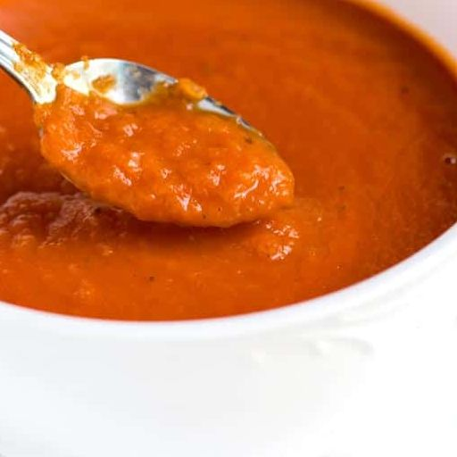

Tomato Soup

This is perhaps the most famous recipe created by Marcella Hazan, the cookbook author who changed how Americans cook Italian food. It also may be her easiest. Use your favorite canned tomatoes for this and don’t be scared off by the butter. It gives the sauce an unparalleled velvety richness.
Ingredients
-
2 cups tomatoes, in addition to their juices (for example, a 28-ounce can of San Marzano whole peeled tomatoes)
-
5 tablespoons butter
-
1 onion, peeled and cut in half
-
Salt
Steps
-
Combine the tomatoes, their juices, the butter and the onion halves in a saucepan. Add a pinch or two of salt.
-
Place over medium heat and bring to a simmer. Cook, uncovered, for about 45 minutes. Stir occasionally, mashing any large pieces of tomato with a spoon. Add salt as needed.
-
Place over medium heat and bring to a simmer. Cook, uncovered, for about 45 minutes. Stir occasionally, mashing any large pieces of tomato with a spoon. Add salt as needed.
Discard the onion before tossing the sauce with pasta. This recipe makes enough sauce for a pound of pasta.
Return Home